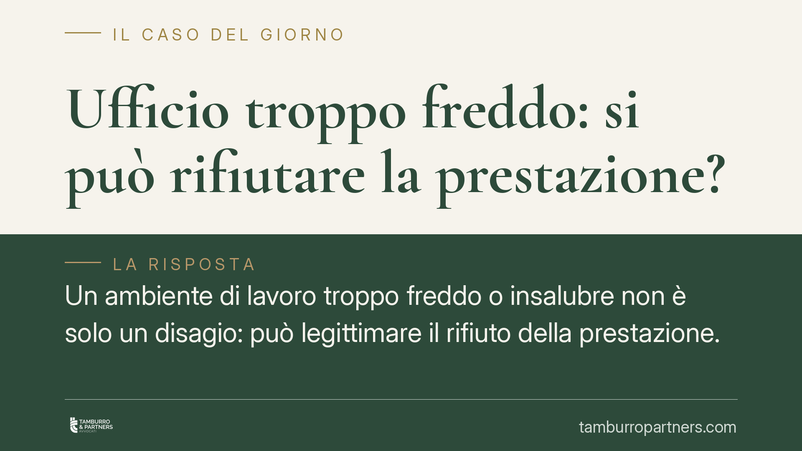

Ufficio troppo freddo: si può rifiutare la prestazione?
Un ambiente di lavoro troppo freddo o insalubre non è solo un disagio: può legittimare il rifiuto della prestazione. La Cassazione conferma che il dipendente non è tenuto a lavorare in condizioni nocive e che il licenziamento adottato come reazione a tale rifiuto può essere nullo. L'onere di provare la salubrità dei locali grava sul datore di lavoro.

Il caso e il principio
Un lavoratore che si rifiuti di svolgere la prestazione in un ambiente troppo freddo, umido o comunque nocivo non commette necessariamente un inadempimento. Secondo l'orientamento della Corte di Cassazione, il rifiuto può essere legittimo quando le condizioni ambientali violano l'obbligo di sicurezza posto a carico del datore di lavoro. In questi casi, il licenziamento intimato come reazione al rifiuto rischia di essere dichiarato nullo perché ritorsivo.
Si tratta di un principio coerente con un quadro normativo consolidato, che vale la pena ricostruire con precisione.
Inquadramento normativo
Il riferimento centrale è l'art. 2087 del Codice civile: l'imprenditore è tenuto ad adottare le misure necessarie a tutelare l'integrità fisica e la personalità morale dei lavoratori. È una norma "aperta", che impone un dovere di protezione dinamico, aggiornato alle migliori conoscenze tecniche.
Sul piano tecnico, i requisiti dei luoghi di lavoro — inclusi temperatura e microclima — sono dettagliati dal D.Lgs. 81/2008 (in particolare l'Allegato IV, sui requisiti dei luoghi di lavoro). Questa disciplina costituisce la base concreta dell'obbligo datoriale: un ambiente che non rispetta i parametri minimi di salubrità integra una violazione dell'obbligo di sicurezza.
Sul versante contrattuale, il fondamento del rifiuto è l'eccezione di inadempimento prevista dall'art. 1460 c.c.: se il datore non adempie all'obbligo di garantire condizioni di lavoro salubri, il lavoratore può astenersi dalla propria prestazione, purché il rifiuto sia proporzionato e conforme a buona fede.
Quanto alla prova, opera l'art. 1218 c.c.: è il datore di lavoro a dover dimostrare di aver adempiuto correttamente, cioè di aver garantito la salubrità dei locali. Non è il dipendente a dover provare la nocività dell'ambiente in ogni dettaglio.
Implicazioni pratiche
Per il lavoratore, il punto delicato è la proporzionalità. Il rifiuto è tutelato quando le condizioni ambientali sono realmente lesive o degradanti; non lo è di fronte a un disagio marginale o transitorio. La valutazione è sempre concreta: contano l'entità dello scostamento dai parametri, la durata, l'esistenza di soluzioni alternative offerte dal datore.
Sul licenziamento eventualmente adottato in risposta al rifiuto: se ne viene accertata la natura ritorsiva, il recesso è nullo. La nullità comporta la tutela reintegratoria a prescindere dal regime applicabile — sia per gli assunti prima del 7 marzo 2015 (art. 18 L. 300/1970), sia per quelli assunti successivamente (art. 2 D.Lgs. 23/2015). In entrambi i casi la nullità del licenziamento discriminatorio o ritorsivo apre alla reintegrazione nel posto di lavoro.
Per il datore, il messaggio è chiaro: la salubrità degli ambienti non è un adempimento formale. In un contenzioso, sarà l'azienda a dover documentare rilevazioni, manutenzioni e interventi correttivi.
Cosa fare in concreto
Per il lavoratore:
- Documenta le condizioni ambientali: rilevazioni di temperatura, fotografie, eventuali segnalazioni di colleghi.
- Segnala per iscritto il problema al datore e, dove presente, al RLS (rappresentante dei lavoratori per la sicurezza) prima di rifiutare la prestazione.
- Non abbandonare il posto in modo generico: motiva il rifiuto in relazione alla condizione specifica e alle norme di sicurezza.
Per il datore di lavoro:
- Conserva la documentazione su misurazioni del microclima, manutenzione degli impianti e interventi eseguiti.
- Reagisci alle segnalazioni con verifiche tempestive, evitando provvedimenti disciplinari che possano apparire ritorsivi.
In presenza di una controversia, o anche solo di una segnalazione formale, consigliamo di valutare la situazione con un professionista prima di adottare qualsiasi provvedimento: la qualificazione del rifiuto e la legittimità della reazione dipendono da un accertamento di fatto puntuale.
---
Contributo informativo a cura di Tamburro & Partners - Avv. Giuseppe Tamburro. Non costituisce parere legale.
Ogni storia di lavoro ha i suoi tempi.
Se gestisci HR e vuoi un confronto su contenzioso, ispezioni o licenziamenti, scrivi allo studio. Ti rispondiamo entro un giorno lavorativo.